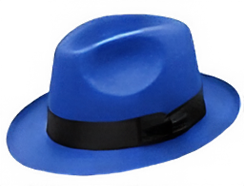
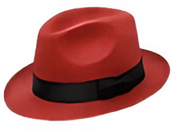
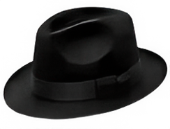
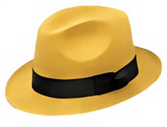
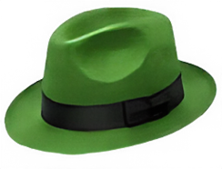

Синяя шляпа
Руководитель
Управляет процессом встречи.
- Определяем цель
- Планируем этапы
- Следим за правилами
- Подводим итоги
Фокус: организация
Формат встречи для генерации новых идей, поиска нестандартных решений, улучшения процессов, разработки новых продуктов и решения сложных задач. Основная цель брейншторма — получить максимум идей, а уже после выбрать наиболее перспективные из них.
Брейншторм — это структурированная командная встреча, цель которой заключается в генерации максимального количества идей для решения конкретной задачи или достижения определенной цели.
Важно понимать, что брейншторм — это не дискуссия и не поиск правильного ответа с первых минут встречи. На этапе генерации идей критика запрещена. Участники предлагают любые варианты, даже если они кажутся необычными или нереалистичными.
Чем больше идей будет предложено, тем выше вероятность найти действительно сильное решение.
На этапе генерации идей нельзя оценивать или критиковать предложения участников.
Хорошая идея часто появляется благодаря развитию и комбинированию нескольких предложений команды.
Команда должна одинаково понимать проблему, которую необходимо решить.
Участники предлагают любые идеи без критики и оценки.
Похожие идеи объединяются в категории и направления.
Команда анализирует сильные и слабые стороны вариантов.
Выбираются наиболее перспективные идеи.
Определяются следующие шаги, ответственные и сроки реализации.
Структурированный подход для рассмотрения проблемы с разных сторон, поиска решений и принятия взвешенных решений.
Мы последовательно «надеваем» разные шляпы, чтобы посмотреть на задачу с разных ракурсов.

Руководитель

Аналитик

Художник

Критик

Оптимист

Креативщик
Метод помогает команде смотреть на проблему с разных сторон, избегать односторонних решений и находить более взвешенные и креативные варианты.
команд принимают лучшие решения
сотрудников отмечают рост вовлеченности
сокращается время на обсуждение
участников считают метод понятным
Онлайн-доска для совместной работы, стикеров, голосования и группировки идей.
Инструмент для построения интеллект-карт и визуализации идей. На сайте можно найти шаблоны для брейншторм-сессий.
Онлайн-доска от Figma для совместных командных сессий.
Использование случайных слов, образов и объектов для поиска новых идей.
Поиск решений через устранение противоречий и системный анализ проблемы.
Сначала команда думает, как ухудшить ситуацию, а затем превращает ответы в улучшения.
Генерация идей через серию вопросов: заменить, объединить, адаптировать, изменить, использовать иначе и т.д.
Метод быстрого поиска решений: 8 идей за 8 минут.